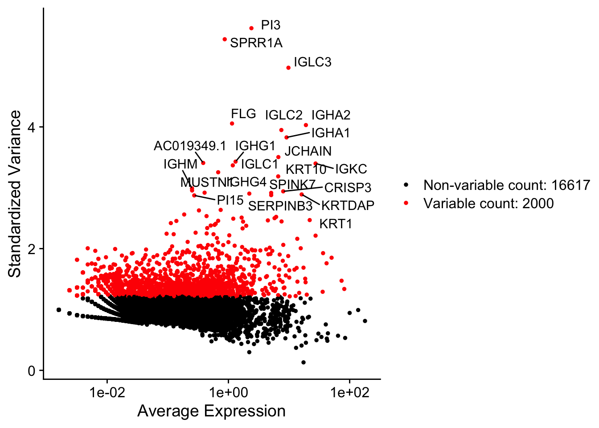
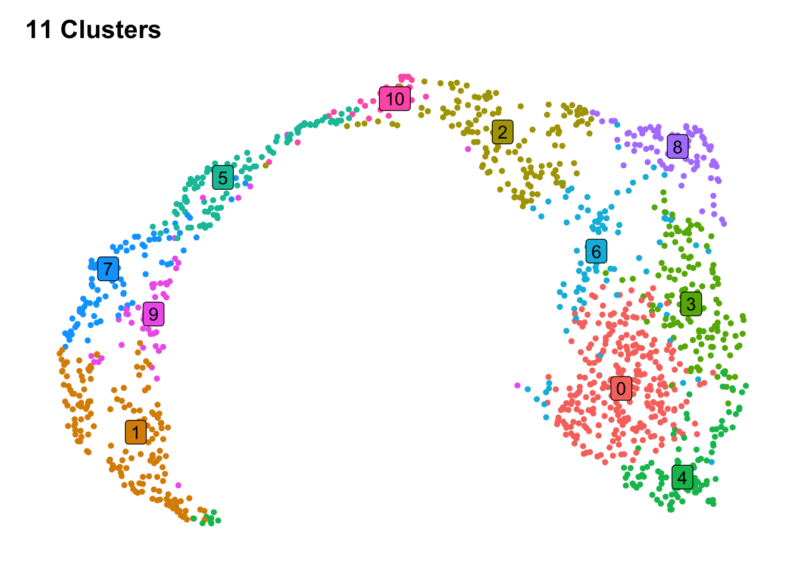
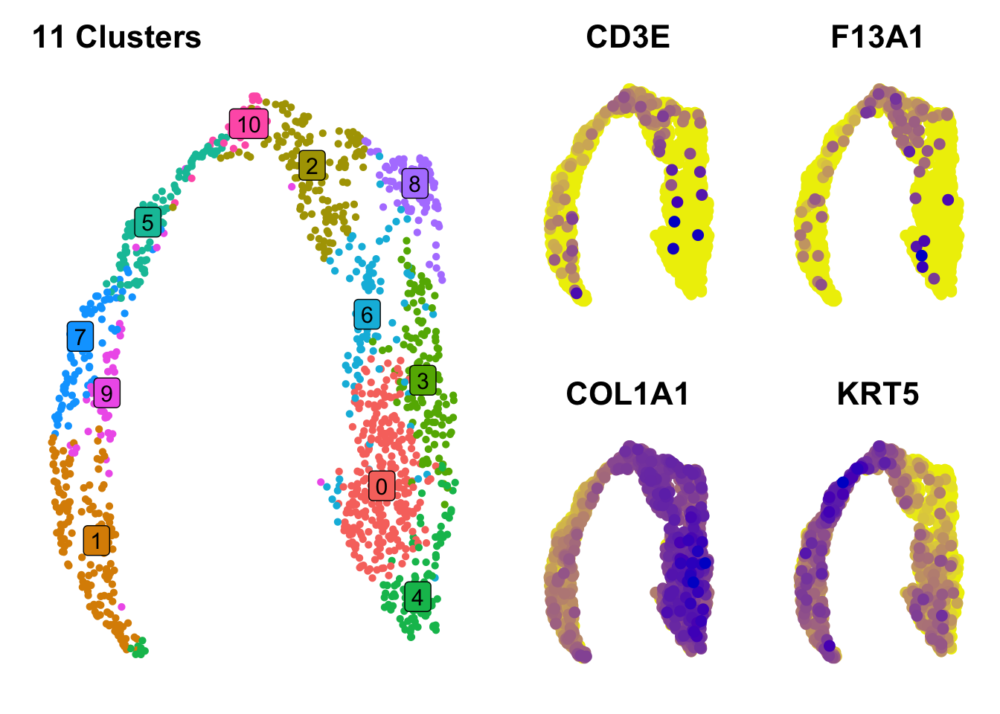
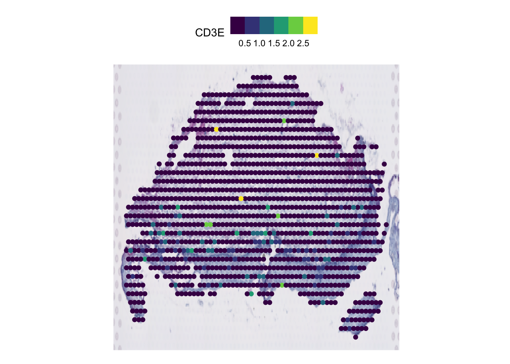

Introduction to Visium Analysis
Author and Demonstrator: Thomas O’Neil
2025-05
Last updated: 2025-05-19
Checks: 7 0
Knit directory:
DigitalResearchSkillsNetwork/
This reproducible R Markdown analysis was created with workflowr (version 1.7.1). The Checks tab describes the reproducibility checks that were applied when the results were created. The Past versions tab lists the development history.
Great! Since the R Markdown file has been committed to the Git repository, you know the exact version of the code that produced these results.
Great job! The global environment was empty. Objects defined in the global environment can affect the analysis in your R Markdown file in unknown ways. For reproduciblity it’s best to always run the code in an empty environment.
The command set.seed(1337) was run prior to running the
code in the R Markdown file. Setting a seed ensures that any results
that rely on randomness, e.g. subsampling or permutations, are
reproducible.
Great job! Recording the operating system, R version, and package versions is critical for reproducibility.
Nice! There were no cached chunks for this analysis, so you can be confident that you successfully produced the results during this run.
Great job! Using relative paths to the files within your workflowr project makes it easier to run your code on other machines.
Great! You are using Git for version control. Tracking code development and connecting the code version to the results is critical for reproducibility.
The results in this page were generated with repository version 61125d7. See the Past versions tab to see a history of the changes made to the R Markdown and HTML files.
Note that you need to be careful to ensure that all relevant files for
the analysis have been committed to Git prior to generating the results
(you can use wflow_publish or
wflow_git_commit). workflowr only checks the R Markdown
file, but you know if there are other scripts or data files that it
depends on. Below is the status of the Git repository when the results
were generated:
Ignored files:
Ignored: .DS_Store
Ignored: .Rhistory
Ignored: analysis/.DS_Store
Ignored: analysis/.RData
Ignored: analysis/.Rhistory
Ignored: analysis/adit/.DS_Store
Ignored: plots/
Ignored: raw/
Untracked files:
Untracked: analysis/adit/0_content management.csv
Untracked: analysis/x202504_Workshop.Rmd
Unstaged changes:
Deleted: analysis/202504_Workshop.Rmd
Modified: analysis/_site.yml
Modified: workflow.R
Note that any generated files, e.g. HTML, png, CSS, etc., are not included in this status report because it is ok for generated content to have uncommitted changes.
These are the previous versions of the repository in which changes were
made to the R Markdown (analysis/202505_Workshop.Rmd) and
HTML (docs/202505_Workshop.html) files. If you’ve
configured a remote Git repository (see ?wflow_git_remote),
click on the hyperlinks in the table below to view the files as they
were in that past version.
| File | Version | Author | Date | Message |
|---|---|---|---|---|
| Rmd | 61125d7 | DrThomasOneil | 2025-05-19 | wflow_publish(c("analysis/0_bugs.Rmd", "analysis/202505_Workshop.Rmd")) |
| html | e794405 | DrThomasOneil | 2025-05-15 | Build site. |
| html | fb553e5 | DrThomasOneil | 2025-05-14 | Build site. |
| Rmd | a5f07d7 | DrThomasOneil | 2025-05-14 | wflow_publish(files) |
| html | c0fa3bc | DrThomasOneil | 2025-05-12 | Build site. |
| Rmd | f349caf | DrThomasOneil | 2025-05-12 | wflow_publish("analysis/202505_Workshop.Rmd") |
| html | cff7923 | DrThomasOneil | 2025-05-07 | Build site. |
| Rmd | ff95f8f | DrThomasOneil | 2025-05-07 | wflow_publish(files) |
| html | 16a9613 | DrThomasOneil | 2025-04-30 | Build site. |
| html | 862d6b6 | DrThomasOneil | 2025-04-29 | Build site. |
| Rmd | b68287f | DrThomasOneil | 2025-04-29 | wflow_publish(files) |
Be
aware!
It is difficult to debug over zoom.
If you want the best feedback and experience, make sure you attend
the workshop in person!
You can download the script on the top right or from this link.
Introduction
Setup
Create folders
Install Packages
Download Data
Create Folders
├── YourFolder
│ └── raw (where we can deposit raw downloaded data)
│ └── data (where we can process data and store it)
│ └── plots (where we can store plots)if(!dir.exists("raw")){dir.create("raw")}
if(!dir.exists("data")){dir.create("data")}
if(!dir.exists("plots")){dir.create("plots")}Install Packages
install.packages("Seurat")
install.packages("tidyverse")
install.packages("cowplot")
install.packages("hdf5r")We have a function that will let you check the setup
source("https://github.com/DrThomasOneil/Digital-Research-Skills-Network/raw/refs/heads/main/docs/adit/checksetup.R")
checkSetup(
cran_packages = c("Seurat", "tidyverse", "cowplot","hdf5r"),
bioc_packages = c()
)
--------------------------------------
***Installing General Packages***
Seurat is loaded!
tidyverse is loaded!
cowplot is loaded!
hdf5r is loaded!
--------------------------------------
All packages are loaded!
Happy Coding! :)
set.seed(1337)Download data
We will download the data directly from the GEO. We’ll use this dataset, which was published in 2024. Additionally, this group have published all of their methods and scripts for analysis.
# Go to the GEO page and right click on the http link under download. It should look like this
data_file <- "https://www.ncbi.nlm.nih.gov/geo/download/?acc=GSE290350&format=file"
# download the data
if(!file.exists("raw/GSE290350_RAW.tar")){download.file(url=data_file, destfile = "./raw/GSE290350_RAW.tar", method='curl')}
# repeat for metadata
if(!file.exists("raw/GSE290350_metadata.csv.gz")){download.file(url='https://www.ncbi.nlm.nih.gov/geo/download/?acc=GSE290350&format=file&file=GSE290350%5Fmetadata%2Ecsv%2Egz', destfile = "raw/GSE290350_metadata.csv.gz", method='curl')}
# and the supposed processed Seurat data
if(!file.exists("raw/GSE290350_seuratObj_spatial_dist.RDS")){download.file(url="https://www.ncbi.nlm.nih.gov/geo/download/?acc=GSE290350&format=file&file=GSE290350%5FseuratObj%5Fspatial%5Fdist%2ERDS", destfile = "raw/GSE290350_seuratObj_spatial_dist.RDS", method='curl')}Unzip and untar the raw data
samples <- list.files("raw/GSE290350_RAW", pattern = "\\.tar\\.gz$", full.names = TRUE)
for (i in seq_along(samples)) {
tar_path <- sub("\\.gz$", "", samples[i])
# Unzip the .tar.gz file
R.utils::gunzip(samples[i], destname = tar_path, overwrite = TRUE)
output_dir <- file.path("raw/GSE290350_RAW", sub("\\.tar$", "", basename(tar_path)))
dir.create(output_dir, showWarnings = FALSE)
# Extract tar to output directory
untar(tar_path, exdir = output_dir)
}Pre-processing
Here we’ll load in the data. Fortunately, this data is quite neatly
organised. When present, we can load the .h5 object. Please
see the Archive page of the website
to find vignettes on downloading and installing GEO-sourced objects that
are not as well-organised!
We will:
Load the data
Add the meta data
Check the QC, filter and process the data
Load in the data
We’ll load in the supplied metadata, and then we can load 10X data
quite easily using the Load10X_Spatial function, which
takes a certain file format. We can load in the filtered matrix, which
is filtered based on whether the initial processing detected that that
spot aligned with tissue. Alternatively, you can load the raw object,
and filter as you wish.
data <- Load10X_Spatial(
data.dir="raw/GSE290350_RAW/GSM8811056_P004/P004",
filename = "filtered_feature_bc_matrix.h5",
filter.matrix = F
)Add meta data
The metadata provided is not found in the object itself. So we will run a small piece of code that lets you add metadata to a Seurat object.
QC
There are several ways to QC transcriptomic data. First, you should check and scrutinise the original manuscript.
We will assess:
number of genes per spot
number of unique genes per spot
mitochondrial, haemoglobin, and ribosomal percentage.
We’ll also filter the genes themselves, to remove noisy/pointless genes.
genes that are not present in more than x number of spots
high-expressing genes across spots.
Genes per spot & Unique genes per spot
This is a typical single-cell RNA analysis metric. It
should be carefully considered how this data is interpretted and
filtered, as this is not single cell. Spots can have
double the average or half the average gene counts based on the density
of cells. Indeed, this is a consideration for normalisation, but this
consideration is for another workshop.
As there is no gold standard, we will demonstrate how you visualise the QC metrics and then filter.
p1=FeatureScatter(data, "nCount_Spatial", "nFeature_Spatial")+NoLegend()
# number of genes
p2=SpatialFeaturePlot(data, "nCount_Spatial",
crop=F,
pt.size=2,
alpha=c(.2,1))+
NoLegend()
# number of unique features
p3=SpatialFeaturePlot(data, "nFeature_Spatial",
crop=F,
pt.size=2,
alpha=c(.2,1))+
NoLegend()
plot_grid(p1,plot_grid(p2,p3, nrow=2))
| Version | Author | Date |
|---|---|---|
| fb553e5 | DrThomasOneil | 2025-05-14 |
The minimum number of Features per spot (107) and minimum number of Counts per spot (151) are greater than the paper’s cut off (which is 100, presuming they did not use the filtered matrix). However, for the purposes of demonstrating how this is done:
Module Scoring
In this paper, they remove cells that are >15% Mt genes & > 10% Hb reads.
data <- PercentageFeatureSet(data, "^MT-", col.name = "percent_mito")
data <- PercentageFeatureSet(data, "^HB[^(P)]", col.name = "percent_hb")
data <- PercentageFeatureSet(data, "^RP[SL]", col.name = "percent_ribo")Statistical and visual summaries of the QC metrics.
feature <- c("nCount_Spatial", "nFeature_Spatial","percent_mito","percent_hb", "percent_ribo")
sapply(data@meta.data[feature], summary) %>%
as_tibble(rownames = "stat") %>%
knitr::kable(digits = 1)| stat | nCount_Spatial | nFeature_Spatial | percent_mito | percent_hb | percent_ribo |
|---|---|---|---|---|---|
| Min. | 151.0 | 107.0 | 1.9 | 0.0 | 2.3 |
| 1st Qu. | 1068.2 | 680.0 | 5.4 | 0.0 | 8.0 |
| Median | 2644.5 | 1363.0 | 6.5 | 0.0 | 9.6 |
| Mean | 6114.8 | 1934.1 | 6.7 | 0.1 | 9.9 |
| 3rd Qu. | 6933.2 | 2584.2 | 7.8 | 0.1 | 11.8 |
| Max. | 70736.0 | 9935.0 | 14.6 | 12.1 | 20.9 |
p1=SpatialFeaturePlot(data, "percent_mito",
crop=F,
pt.size=2,
alpha=c(.2,1))+
NoLegend()+ggtitle("Mito")
p2=SpatialFeaturePlot(data, "percent_hb",
crop=F,
pt.size=2,
alpha=c(.2,1))+
NoLegend()+ggtitle("Hb-genes")
p3=SpatialFeaturePlot(data, "percent_ribo",
crop=F,
pt.size=2,
alpha=c(.2,1))+
NoLegend()+ggtitle("Ribo")
plot_grid(p1,p2,p3)
| Version | Author | Date |
|---|---|---|
| fb553e5 | DrThomasOneil | 2025-05-14 |
Filter:
data <- subset(data, subset = percent_mito<15 & percent_hb <10)
sapply(data@meta.data[feature], summary) %>%
as_tibble(rownames = "stat") %>%
knitr::kable(digits = 1)| stat | nCount_Spatial | nFeature_Spatial | percent_mito | percent_hb | percent_ribo |
|---|---|---|---|---|---|
| Min. | 151.0 | 107.0 | 1.9 | 0.0 | 2.3 |
| 1st Qu. | 1067.5 | 681.0 | 5.4 | 0.0 | 8.0 |
| Median | 2654.0 | 1363.0 | 6.5 | 0.0 | 9.6 |
| Mean | 6118.8 | 1935.1 | 6.7 | 0.1 | 9.9 |
| 3rd Qu. | 6952.5 | 2585.5 | 7.8 | 0.1 | 11.8 |
| Max. | 70736.0 | 9935.0 | 14.6 | 4.7 | 20.9 |
Filter genes
We’ll first remove certain genes. MALAT1 is highly expressed in long non-coding RNA and is pretty ubiquitous. So we dont want to include and subsequently cluster according to the expression of this gene. Similarly, Hb genes are highly expressed in rbc, which may represent contamination. We can remove these too.
keep_genes <- rownames(data)[!rownames(data) %in% c(grep("MALAT1", rownames(data), value=T), grep("^HB[^(P)]", rownames(data), value=T))]
data <- subset(data, features = keep_genes)Low genes can create noise and take up unnecessary space in the object. Let’s remove genes according to the original manuscript, whereby a gene not found in > 2 spots is removed. You can adjust this as you wish.
We recommend taking some time to carefully consider your QC strategy. There is no universal gold standard. One common approach is to start with lenient QC, proceed with processing, and during clustering and annotation, remain aware of the relaxed filtering. If unexpected results arise, you can revisit and refine your QC. Personally, I prefer to be permissive at first, while tagging potential outliers for future consideration. For example, we initially filtered out genes not present in at least 2 spots, but I may also label genes present in fewer than 5 spots as “toQC” for later review—particularly when assessing differential expression results. Similarly, we applied a 15% mitochondrial threshold but did not filter based on ribosomal content. At a later stage, we could tighten the mitochondrial threshold to 10% and include a filter for high ribosomal spots. If unusual clusters appear, we can then assess how many of those cells would have been excluded under stricter QC.
Data Processing
Seurat is an efficient package with simple functions for standard processing.
NormalizeData: The default is to log-normalize (Feature counts for each cell are divided by the total counts for that cell and multiplied by the scale.factor. This is then natural-log transformed using log1p). Spatial data may be better normalised with Area/cell count considered. As we don’t have cell counts per spot here, we’ll stick to the standard approach and that taken by the authorsFindVariableFeatures: The standard approach is 2000 top variable genes + ‘vst’ selection method. (First, fits a line to the relationship of log(variance) and log(mean) using local polynomial regression (loess). Then standardizes the feature values using the observed mean and expected variance (given by the fitted line). Feature variance is then calculated on the standardized values after clipping to a maximum). Standard is 2000 genesScaleData: here, we scale just the variable genes to save space. If you find yourself unable to visualise your gene of interest in subsequent visualisations, it was not in this top variable list. In that case, you can scale all data.RunPCA&RunUMAP: Visualisation tools. There are a few things to consider in the UMAP function, but most important is thedimsargument. We’ll cover this below.
Normalisation
Again, normalisation is quite simple.
Variable Features
We’ll find the top variable features.
data <- FindVariableFeatures(data,
method = 'vst',
nfeatures = 2000, # Find the 2000 most variable features
verbose=F)We can output/visualise them.
VariableFeatures(data) %>% head(50)
[1] "PI3" "SPRR1A" "IGLC3" "FLG" "IGHA2"
[6] "IGLC2" "IGHA1" "JCHAIN" "IGHG1" "AC019349.1"
[11] "IGKC" "IGLC1" "IGHG4" "KRT10" "IGHM"
[16] "MUSTN1" "CRISP3" "CEACAM5" "SPINK7" "SERPINB4"
[21] "KRTDAP" "SERPINB3" "PI15" "RPTN" "SPRR2B"
[26] "KLK6" "MGST1" "KRT6B" "SLURP1" "ERO1A"
[31] "CCL14" "KRT1" "SPRR2E" "RNASE7" "TOP2A"
[36] "CRCT1" "MT1X" "RRM2" "S100A7" "DUOXA2"
[41] "STMN1" "LCE3D" "PCNA" "FAM25A" "IGHG3"
[46] "C15orf48" "OLFM4" "PTTG1" "YOD1" "CEACAM7"
LabelPoints(plot = VariableFeaturePlot(data),
points = head(VariableFeatures(data), 50), repel = TRUE)
| Version | Author | Date |
|---|---|---|
| fb553e5 | DrThomasOneil | 2025-05-14 |
Scale Data
Scaling the data is also easy!
data <- ScaleData(data,
features = VariableFeatures(data), #if you want to scale all features, change this to rownames(data)
verbose=F)If you need to return to your analysis at another time, or you want a record, we can save the processed data in a dedicated folder and label it accordingly.
PCA & UMAP
Also very easy with Seurat. We’ll determine the number of PCs to use for the UMAP using ElbowPlot
| Version | Author | Date |
|---|---|---|
| c0fa3bc | DrThomasOneil | 2025-05-12 |
The elbow plot drops off drastically and plateaus at ~6, meaning the variation just becomes noisy around PC6-onwards. Or, more than 6 PCs do not represent the data any better. So we’ll just use the first 6 to proceed.
Visualisation
There are several visualisations we can do:
Graph:
UMAP visualisation
Cluster based expressions
Spatial:
Genes overlaid on the tissue
Module scores overlaid on the tissue
UMAP
UMAP Visualisation
We’ll first cluster the data.
And now we can create a UMAP.

| Version | Author | Date |
|---|---|---|
| fb553e5 | DrThomasOneil | 2025-05-14 |
Open to view more Plotting options
Here are some additional arguments that change the default visualisations. Chop and change to see how they work:
UMAPPlot(data,
pt.size=2,
label=T,
label.size=10,
label.box=T,
label.color="white",
repel=T)+
NoLegend()+
NoAxes()+
scale_color_manual(values= c("blue4", 'blue2', 'lightblue', 'green2', 'green4','brown', 'orange', 'red', 'red3', 'red4', 'black'))+
scale_fill_manual(values= c("blue4", 'blue2', 'lightblue', 'green2', 'green4','brown', 'orange', 'red', 'red3', 'red4', 'black'))
| Version | Author | Date |
|---|---|---|
| c0fa3bc | DrThomasOneil | 2025-05-12 |
Featureplots
We can view the gene expression on the UMAP itself.
p2=FeaturePlot(data,
"CD3E",
order=T,
pt.size=2,
cols = c("yellow2", 'blue3'))+NoAxes()+NoLegend()
p3=FeaturePlot(data,
"F13A1",
order=T,
pt.size=2,
cols = c("yellow2", 'blue3'))+NoAxes()+NoLegend()
p4=FeaturePlot(data,
"COL1A1",
order=T,
pt.size=2,
cols = c("yellow2", 'blue3'))+NoAxes()+NoLegend()
p5=FeaturePlot(data,
"KRT5",
order=T,
pt.size=2,
min.cutoff = 3,
cols = c("yellow2", 'blue3'))+NoAxes()+NoLegend()
plot_grid(p1, plot_grid(p2,p3,p4,p5, ncol=2))
| Version | Author | Date |
|---|---|---|
| c0fa3bc | DrThomasOneil | 2025-05-12 |
DE and DotPlots
And we can simply assess the clusters themselves using differential analysis and expression graphs.
markers <- FindAllMarkers(data,
logfc.threshold = 0.1,#default - increasing speeds it up, but may miss weaker signals.
min.pct = 0.01, #default - can be increased to ensure that the minimum expression of genes are considered.
min.diff.pct = -Inf, # you can adjust this too. IF you want there to be at least a 10% difference in percentage of spots expressing the gene, you'd change this to 0.1. Can ensure that its not only the level of expression, but that you're capturing highly expressed genes
verbose=F #change this to true if you want to track the speed at which DE is being calculated. It is off here to save it outputting into the document
)
top10 <- markers %>%
group_by(cluster) %>%
top_n(wt=avg_log2FC, n=10)Heatmap
DoHeatmap(AggregateExpression(ScaleData(data, rownames(data), verbose=F), return.seurat = T, verbose=F),
features = top10$gene,
draw.lines = F)
DotPlot
Violin
Spatial
We can do a few things here.
Clusters overlaid spatially
Expressions overlaid spatially
| Version | Author | Date |
|---|---|---|
| fb553e5 | DrThomasOneil | 2025-05-14 |

| Version | Author | Date |
|---|---|---|
| fb553e5 | DrThomasOneil | 2025-05-14 |
| Version | Author | Date |
|---|---|---|
| fb553e5 | DrThomasOneil | 2025-05-14 |
sessionInfo()
R version 4.4.0 (2024-04-24)
Platform: aarch64-apple-darwin20
Running under: macOS Sonoma 14.3
Matrix products: default
BLAS: /Library/Frameworks/R.framework/Versions/4.4-arm64/Resources/lib/libRblas.0.dylib
LAPACK: /Library/Frameworks/R.framework/Versions/4.4-arm64/Resources/lib/libRlapack.dylib; LAPACK version 3.12.0
locale:
[1] en_US.UTF-8/en_US.UTF-8/en_US.UTF-8/C/en_US.UTF-8/en_US.UTF-8
time zone: Australia/Sydney
tzcode source: internal
attached base packages:
[1] stats graphics grDevices utils datasets methods base
other attached packages:
[1] hdf5r_1.3.12 cowplot_1.1.3 lubridate_1.9.4 forcats_1.0.0
[5] stringr_1.5.1 dplyr_1.1.4 purrr_1.0.4 readr_2.1.5
[9] tidyr_1.3.1 tibble_3.2.1 ggplot2_3.5.1 tidyverse_2.0.0
[13] Seurat_5.2.1 SeuratObject_5.0.2 sp_2.2-0 cli_3.6.4
[17] workflowr_1.7.1
loaded via a namespace (and not attached):
[1] RColorBrewer_1.1-3 rstudioapi_0.17.1 jsonlite_1.9.1
[4] magrittr_2.0.3 ggbeeswarm_0.7.2 spatstat.utils_3.1-3
[7] farver_2.1.2 rmarkdown_2.29 ragg_1.3.3
[10] fs_1.6.5 vctrs_0.6.5 ROCR_1.0-11
[13] spatstat.explore_3.3-4 htmltools_0.5.8.1 sass_0.4.9
[16] sctransform_0.4.1 parallelly_1.42.0 KernSmooth_2.23-26
[19] bslib_0.9.0 htmlwidgets_1.6.4 ica_1.0-3
[22] plyr_1.8.9 plotly_4.10.4 zoo_1.8-13
[25] cachem_1.1.0 whisker_0.4.1 igraph_2.1.4
[28] mime_0.13 lifecycle_1.0.4 pkgconfig_2.0.3
[31] Matrix_1.7-3 R6_2.6.1 fastmap_1.2.0
[34] fitdistrplus_1.2-2 future_1.34.0 shiny_1.10.0
[37] digest_0.6.37 colorspace_2.1-1 patchwork_1.3.0
[40] ps_1.9.0 rprojroot_2.0.4 tensor_1.5
[43] RSpectra_0.16-2 irlba_2.3.5.1 textshaping_1.0.0
[46] labeling_0.4.3 progressr_0.15.1 timechange_0.3.0
[49] spatstat.sparse_3.1-0 httr_1.4.7 polyclip_1.10-7
[52] abind_1.4-8 compiler_4.4.0 bit64_4.6.0-1
[55] withr_3.0.2 fastDummies_1.7.5 MASS_7.3-65
[58] tools_4.4.0 vipor_0.4.7 lmtest_0.9-40
[61] beeswarm_0.4.0 httpuv_1.6.15 future.apply_1.11.3
[64] goftest_1.2-3 glue_1.8.0 callr_3.7.6
[67] nlme_3.1-167 promises_1.3.2 grid_4.4.0
[70] Rtsne_0.17 getPass_0.2-4 cluster_2.1.8.1
[73] reshape2_1.4.4 generics_0.1.3 gtable_0.3.6
[76] spatstat.data_3.1-6 tzdb_0.5.0 hms_1.1.3
[79] data.table_1.17.0 spatstat.geom_3.3-6 RcppAnnoy_0.0.22
[82] ggrepel_0.9.6 RANN_2.6.2 pillar_1.10.1
[85] limma_3.60.6 spam_2.11-1 RcppHNSW_0.6.0
[88] later_1.4.1 splines_4.4.0 lattice_0.22-6
[91] bit_4.6.0 survival_3.8-3 deldir_2.0-4
[94] tidyselect_1.2.1 miniUI_0.1.1.1 pbapply_1.7-2
[97] knitr_1.50 git2r_0.35.0 gridExtra_2.3
[100] scattermore_1.2 xfun_0.51 statmod_1.5.0
[103] matrixStats_1.5.0 stringi_1.8.4 lazyeval_0.2.2
[106] yaml_2.3.10 evaluate_1.0.3 codetools_0.2-20
[109] uwot_0.2.3 systemfonts_1.2.1 xtable_1.8-4
[112] reticulate_1.41.0.1 munsell_0.5.1 processx_3.8.6
[115] jquerylib_0.1.4 Rcpp_1.0.14 globals_0.16.3
[118] spatstat.random_3.3-2 png_0.1-8 ggrastr_1.0.2
[121] spatstat.univar_3.1-2 parallel_4.4.0 presto_1.0.0
[124] dotCall64_1.2 listenv_0.9.1 viridisLite_0.4.2
[127] scales_1.3.0 ggridges_0.5.6 rlang_1.1.6